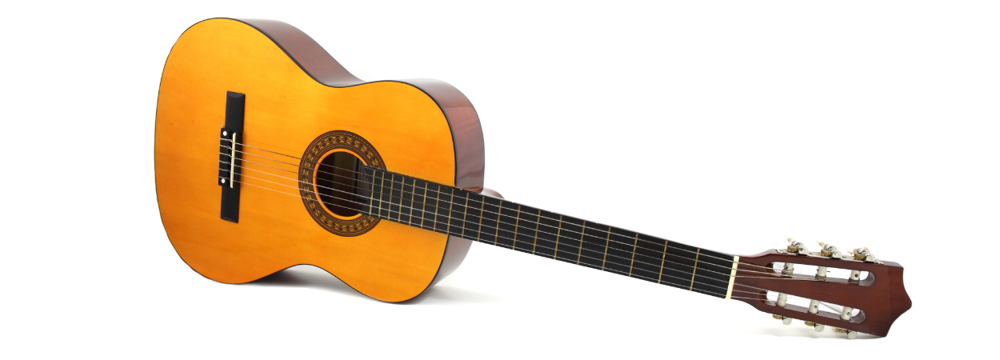

"La guitarra es belleza íntima y poesía"
-Julian Bream
-Julian Bream
Julian Bream dedicó su vida a explorar y expandir el repertorio de la guitarra clásica, destacando su capacidad para transmitir emociones con una delicadeza única. La guitarra no busca imponerse con volumen, sino conquistar con sutileza. Su sonido cálido, cercano y lleno de matices permite al intérprete crear momentos profundamente personales. Tocar la guitarra es como recitar un poema con los dedos: cada nota tiene intención, cada silencio, sentido.
Fomenta la autoconfianza
al lograr avances musicales.
Desarrolla la creatividad
al explorar distintos géneros.
Mejora la concentración
al requerir atención constante.
Facilita la expresión
emocional a través de la música.
Fomenta la paciencia
al aprender nuevas técnicas.
Estimula la memoria muscular
al repetir patrones y secuencias.
Desarrolla agilidad mental
y física al ejecutar piezas.
Fortalece la memoria
al recordar estructuras musicales.
Aumenta la sensibilidad táctil
al trabajar con dinámicas.
Desarrolla la motricidad fina
mediante el uso de los dedos.
Las clases de instrumento individuales ofrecen atención personalizada, lo que permite un aprendizaje más rápido y efectivo. Cada lección se adapta al ritmo y necesidades del estudiante, maximizando su progreso y confianza en cada paso.
Para los alumnos principiantes, la modalidad presencial es clave, ya que les permite recibir una dirección precisa sobre la técnica y la postura frente al instrumento. Esta guía asegura que los errores sean corregidos desde el inicio y establece una base sólida que facilita el aprendizaje a largo plazo.
A diferencia de otros establecimientos en donde las clases son de solo 45 minutos, nuestras clases duran una hora completa. Este tiempo adicional permite al estudiante explorar más conceptos, perfeccionar la técnica y practicar sin prisas.
Para tu comodidad, ofrecemos clases de piano a domicilio, permitiéndote aprender en tu propio espacio y con mayor tranquilidad. Es una opción ideal para quienes prefieren un entorno familiar y ahorrar tiempo sin salir de casa.
A diferencia de otros establecimientos en donde las clases son de solo 45 minutos, nuestras clases duran una hora completa. Este tiempo adicional permite al estudiante explorar más conceptos, perfeccionar la técnica y practicar sin prisas.
Nuestras clases combinan la práctica instrumental con la enseñanza teórica, lo que brinda una formación completa. Así, el estudiante no solo aprende a tocar, sino que también comprende lo que interpreta y desarrolla una visión más profunda y musicalmente sólida.

Daniel Haro, guitarrista y docente con seis años de experiencia. Realizó sus estudios en el Conservatorio de Música Mozarte, y ha enriquecido su formación musical tocando en diversos ensambles y agrupaciones. Como profesor, ha impartido clases individuales de instrumento y clases grupales en áreas teóricas. Su experiencia artística incluye presentaciones en festivales como “Sonamos Latinoamérica”, “Festival de Música de Cámara”, “Encuentros de Guitarra Quiteña”, así como su participación en el “Ensamble de Guitarras Umiña”. Su enfoque pedagógico se basa en acompañar a cada estudiante en su proceso, integrando técnica, creatividad y disfrute por la música en cada clase.
Se requiere tener el instrumento en casa. Una guitarra clásica tamaño estándar.
El costo de las clases tienen dependencia con el tiempo de movilización a la ubicación del domicilio. Por favor, contáctanos para poder darte más información sobre costos y promociones.
No, no es necesario. Nuestras clases están diseñadas para adaptarse al nivel de cada estudiante, ya sea principiante o con experiencia previa.